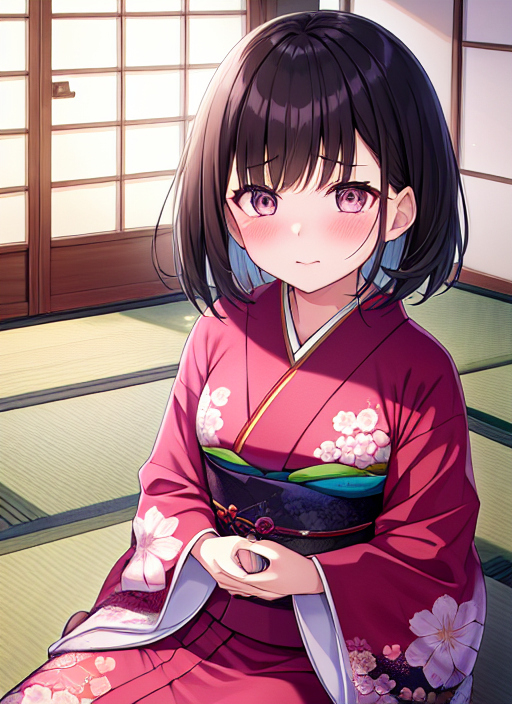

帰宅部廃止運動
ある中学校で｢帰宅部廃止運動｣というものが発令された。その名の通り、帰宅部を全員部活に入れさせるものだ。これはある2人の帰宅部の少年の物語である。
｢は？んだそりゃ｣
彼の名前は瀬戸碧月。親に対する反抗期がエスカレートし、教師に対する態度まで悪化した、名前とは正反対の不良だ。彼はやはり部活には所属していない。
｢そんなの入らなくたって何も起こんねーだろ｣
呑気なことを言って碧月は教室から出て帰り始めた。すると、階段を降りた時何者かに手を捕まれたのだ。続けて両手両足を縛られ、目隠しをされ、口を塞がれると、誰かに担がれてどこかに連れ去られたのだ。
｢～～～！｣
数分後、どこかに下ろされて、目隠しと口の塞ぎを外される。見渡すと、そこには着物を着た女子生徒達がいた。
｢て、てめえら！何しやがんだ！｣
倒れた碧月を見下しながら一人の女子生徒がこういった。
｢瀬戸碧月さん、帰宅部廃止は決定されているのに、部活の入部届けを出しませんね。よってあなたはこちらが無理矢理入部させます｣
｢あぁ？どういうことだてめえ！部活に入らないからなんだってんだよ！｣
すると、女子生徒はため息をつく。それもとても深いものを。
｢はぁ...この野蛮な精神も叩き直さないといけませんか...いいでしょう、やりますよ皆さん｣
一人の声で他の女子生徒達も碧月に近づいていく。複数の女子生徒で碧月の身動きを完全に封じた。
｢んぐあっ...てめえら！何しやがんだ！｣
女子生徒は何も言わずに彼のベルトやボタン、ネクタイを外すと、ズボンやワイシャツ、下着までもを裁ち鋏で切り刻んでしまったのだ。
｢おい...どういうことだ！センコーはどこにいやがる！｣
碧月の声に反応することなく次の動作に移った。今度は碧月の身体中の毛を剃り始めたのだ。彼の生え始めの薄い毛にクリームを塗りたくっていく。すぐに彼の全身はクリームまみれになる。そのクリームを今度は柔らかいタオルで拭き取っていく。たちまち彼の肌はツルツルの肌触りになった。
｢てめえ...何がしてえんだ！いい加減答えやがれ！｣
すると、女子生徒は立ち上がり、彼をまた見下しながらこう言い放った。
｢あなたを我が茶道部員に所属させるんですよ。そのためにはそのうるさく野蛮な心を取り除かなければいけないので｣
｢どういうことだよ...訳わかんねえが、ゼッテエここの部には入らねえ！｣
女子生徒の返答はなかった。だが、予想外なことに両手両足な枷を外したのだ。女子生徒達に畳の上に押さえ付けられたままなので動けないが。
｢な、何がしてえんだ...てめえら...｣
返答はしないまま、女子生徒は奥から何かを持ってきた。それは服だ。全裸の彼に着せるための衣服一式であった。だが、それを見て彼の顔はより憎悪と怒りに溢れていった。
｢放しやがれ！このクソやろうどもが！おい！センコー聞こえねえのか！おい！｣
彼の叫びは虚しく部屋中に響き渡るだけ。女子生徒は下着を持って彼に近づいてきた。持っているのは薄ピンクに白の水玉模様のパンティだ。彼の脚に少しずつ通していく。彼の顔は恐怖に怯える顔に変わっていた。自分がこれからどうされるのか、分かってしまったが故の恐怖だ。
｢やめろ...やめろ...｣
もう彼の声に覇気はない。そのままパンティは彼の股へとフィットしてしまった。次に持ってきた白のスリップも抵抗なく着せられる。
｢うあ...あああ...｣
彼の顔に涙が浮かび上がり始めた。自分を作り替えられてしまうことに恐ろしさを覚えたのだ。
彼は女子生徒達に立ち上がらされる。しかし、一切の抵抗はない。そのまま着物を着せられていく。桜の花柄のピンク色の着物だ。腰に黄色い帯も巻かれ、完璧に着付けが完了する。
｢ほら、碧月くん、見なさい。これが今のあなたなのよ｣
碧月の目の前に姿見が置かれる。そこには着物を着こなした碧月の姿があった。目には涙を浮かべ、顔には恐怖を浮かべた碧月が。しかし、そんな碧月に対する女子生徒達の慈悲はなかった。
｢この汚ならしい頭髪も変えてしまいましょう｣
寝癖がついたままの髪を櫛で何度も何度もとかしていく。次第にその髪は輪郭に沿うように真っ直ぐに整えられていく。
｢い、いやだ...もうやめてくれ...ほんとに...もう...｣
しかし、女子生徒達はその言葉に耳を傾けず、ハサミで彼の前髪をジョキッと一直線にカットしてしまった。目の前にはパッつんに切り揃えられた着物姿の少年がいた。
｢もう嫌だ...助けて...｣
すると、彼の耳にこんな言葉が舞い込んできた。
｢大丈夫、怖がらなくてもいいんだよ...｣
さっきまで彼を好き放題してきた女子生徒の声だ。混乱している彼はまだ認識出来ていないが。
｢わたしはあなたの味方...安心して...落ち着いて...目をつぶって深呼吸して...｣
｢スゥー...ハァー...｣
碧月は彼女の言われるがままに行動する。彼からしたらこの声は救世主も同然なのだろう。そして、女子生徒は碧月をどんどん自分達の思うようにしていく。
｢そう...それでいいの...優花ちゃん...｣
｢...優花...？｣
｢あなたは優花ちゃん...瀬戸優花ちゃんよ...｣
｢優花ちゃん...？｣
｢そう...あなたは茶道部に入部したばかりの女の子...丁寧な口調のおしとやかな女の子...入ったばかりで混乱しちゃってたのよね...｣
｢おしとやかな...女の子...優花ちゃん...｣
｢そう...わたしは優花...わたしは女の子...言ってごらん...｣
｢わたしは優花...わたしは女の子...｣
｢思い出した...？あなたは誰にでも物腰柔らかく、名前のように優しい女の子...｣
｢わたしは優しい女の子...わたしはおしとやかな女の子...｣
翌日
教室に一人、入室してきた。その子を見て、教室中はざわつく。
｢おい...誰だよあれ...｣
｢ねえ、あれ瀬戸じゃないの？なんであんな格好してるのよ...｣
そんなざわつく生徒達に、その女子制服を着て、鞄を両手で持つパッつんショートの子はにこやかに笑い、挨拶した。
｢あら、皆さんおはようございます｣